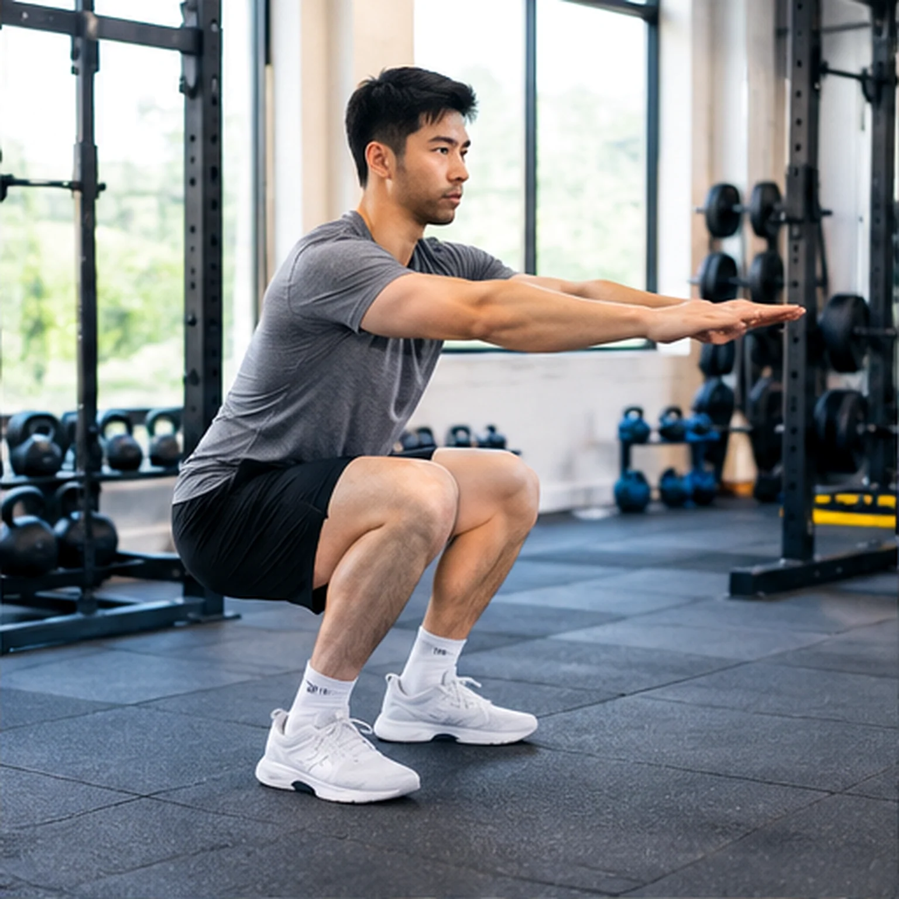

Gym & Fitness
Gym & FitnessTập gym cho người mới: bắt đầu từ đâu cho đúng?
Lộ trình nhập môn ưu tiên kỹ thuật, nhịp tập và khả năng duy trì thay vì mức tạ.
Tập luyện thông minh, làm chủ kỹ thuật sức mạnh và xây dựng thói quen bền vững. Các bài viết được sắp xếp để bạn bắt đầu từ nền tảng, tiếp tục với bài thực hành và lựa chọn phù hợp với nhu cầu.
Gym & FitnessLộ trình nhập môn ưu tiên kỹ thuật, nhịp tập và khả năng duy trì thay vì mức tạ.

Gym & FitnessMột bài squat tốt phù hợp với cấu trúc cơ thể, không phải ép mọi người vào một dáng đứng giống nhau.
Deadlift là bài học về dùng hông tạo lực; hiểu hip hinge quan trọng hơn việc nâng thật nặng.